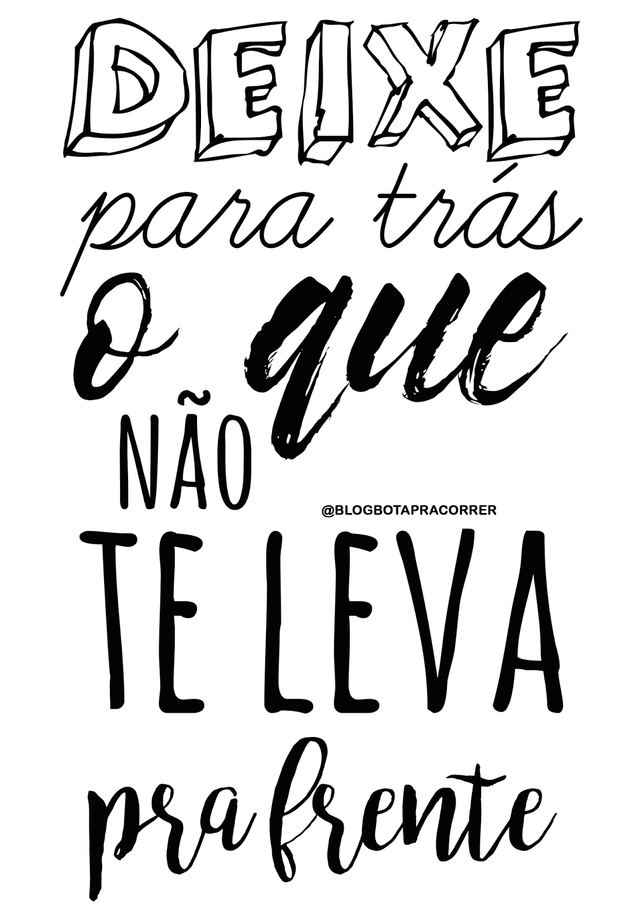

O que é depressão?É um conjunto de condições associadas à elevação ou ao rebaixamento do humor, como depressão ou transtorno bipolar.

A relação que o bullying tem com a depressõ?O bullying corresponde à prática de atos de violência física ou psicológica, intencionais e repetidos, cometidos por um ou mais agressores contra uma determinada vítima.
Em outros termos, significa todo O transtorno depressivo tem um potencial significativo de morbidade e mortalidade, contribuindo para o suicídio, a incidência e os resultados adversos de doenças médicas, a interrupção das relações interpessoais, o abuso de substâncias e o tempo de trabalho perdido. Em pesquisa realizada durante 2009-2012, 7,6% dos americanos com 12 anos ou mais tiveram depressão (sintomas depressivos moderados ou graves).
A depressão foi mais prevalente entre mulheres com idade entre 40 e 59 anos. Com o tratamento adequado, 70-80% dos indivíduos com transtorno depressivo maior podem alcançar uma redução significativa nos sintomas.
AutotratamentoA depressão profunda é um problema médico melhor tratado por um profissional da área de saúde. Praticar exercícios físicos, reduzir a ingestão de álcool, evitar o consumo de drogas e relacionar-se com amigos e familiares também pode ajudar.
O que é o CVVCentro de Valorização da Vida realiza apoio emocional e prevenção do suicídio, atendendo voluntária e gratuitamente todas as pessoas que querem e precisam conversar, sob total sigilo por telefone, email e chat 24 horas todos os dias.
CVV - COMO VAI VOCÊ?